Swarm Intelligence:
Borrowing From Nature
Holden Profit
Swarms in Nature

Swarms in Nature

Swarms in Nature

Swarms in Nature

Swarm Intelligence
According to Wikipedia:
"Swarm intelligence (SI) is the collective behavior of decentralized, self-organized systems, natural or artificial."
In nature, it is a description for how herd animals, insects, and even humans behave in large groups.
In software, it is the emulation of that same behaviour in nature.
What is Swarm Intelligence used for?
- Data Mining
- Cellular Robot Systems
- Particle Swarm Optimization
- Visual Effects for Games and Movies
Cellular Robot Systems

Video Games and Movies

How do I create my own Swarm Intelligence?
Vectors
Before you can make a swarm, you must first know how to utilize vectors!
Let's go over the basics of 2D Vector math before we begin.
Vectors - What is it?
Vectors - Anatomy
Vectors - Addition
Vectors - Subtraction

Vectors - Multiplication and Division

Vectors - Magnitude (Length)

Vectors - Normalize

The Flock (Swarm) Entity
For the purposes of this talk, I refer to my swarm objects as 'flock entities'.
Before doing anything else, we first define our entity with some basic properties
Position
Vector representing where the entity is in the world
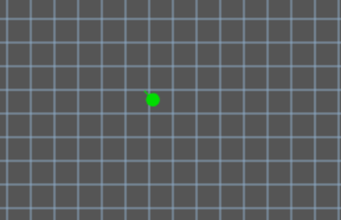
Velocity
Vector representing the direction the entity is moving in
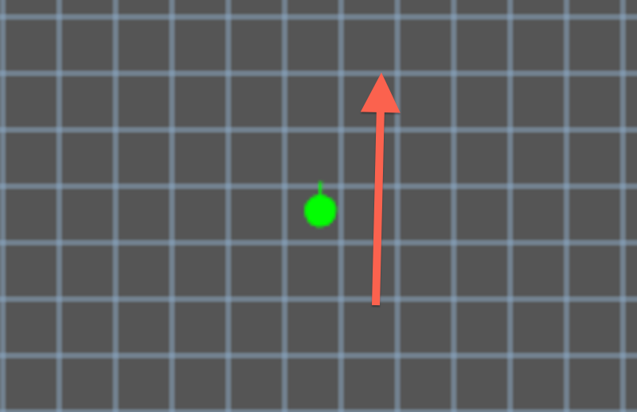
Speed
Number denoting how quickly the entity moves (a scalar for Velocity)
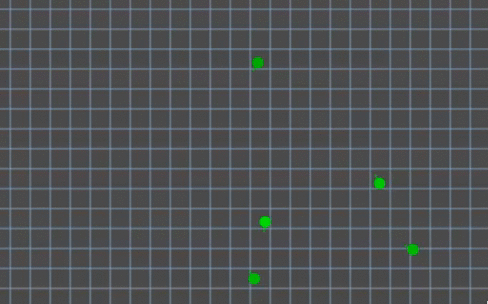
The Flock (Swarm) Entity

Getting started with Swarm Intelligence
The basics of Swarm Intelligence lie in several key factors:
- Cohesion
- Separation
- Alignment
Cohesion: The Attraction Force!
Cohesion is the force that draws the entities of a swarm together.
How does it work?

Take the position of all nearby entities
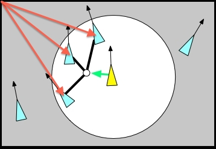
Add the positions of the nearby entities together
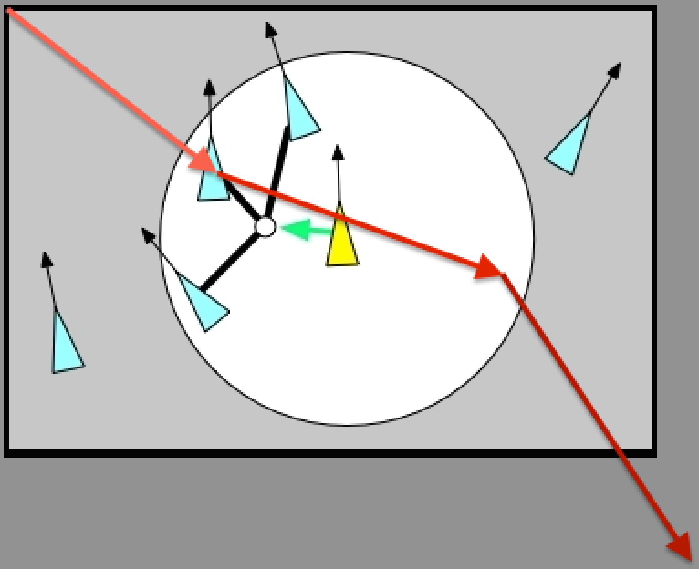
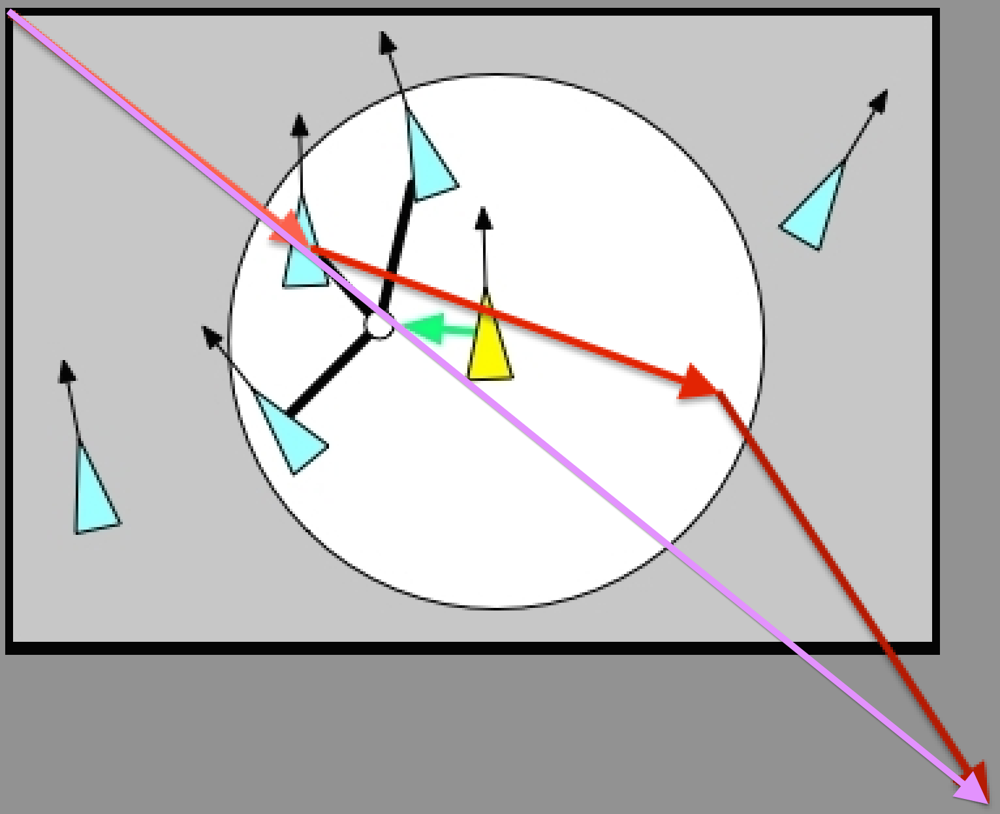
Divide the total by the number of nearby entities 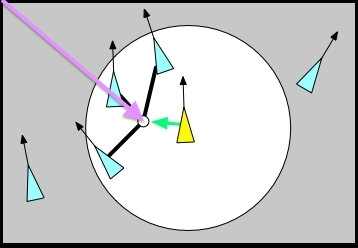
Subtract the result from the current entity's position 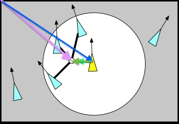
Cohesion: The Attraction Force!

Separation: The Personal Space Force!
Separation is the force that pushes entities apart enough to have some personal space
Because who wants their neighbor to be right next to them?
How does it work?
Separation: Maintain some Distance

For a given neighbor, subtract the neighbor's position from this entity's position and reverse it
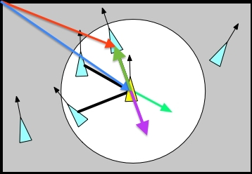
Repeat this process for each neighbor, keeping the resulting vectors
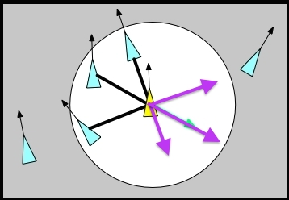
Normalize each of the resulting vectors
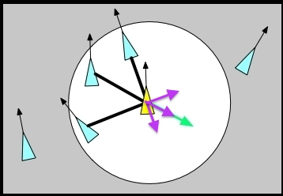
Add the resulting vectors together
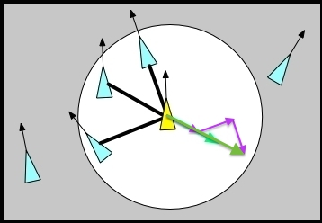
Normalize the total for the separation force
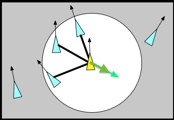
Separation: The Personal Space Force!

Alignment: Going Forward Together!
Alignment is the force that draws each entity toward the same general direction as it's peers
How does it work?
Alignment: Going Forward Together

{kind=link}
{kind=link}
{kind=link}
For a given neighbor, store it's velocity
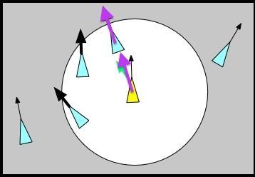
Repeat this for each neighbor
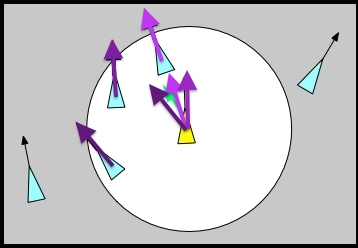
Add the stored velocities together
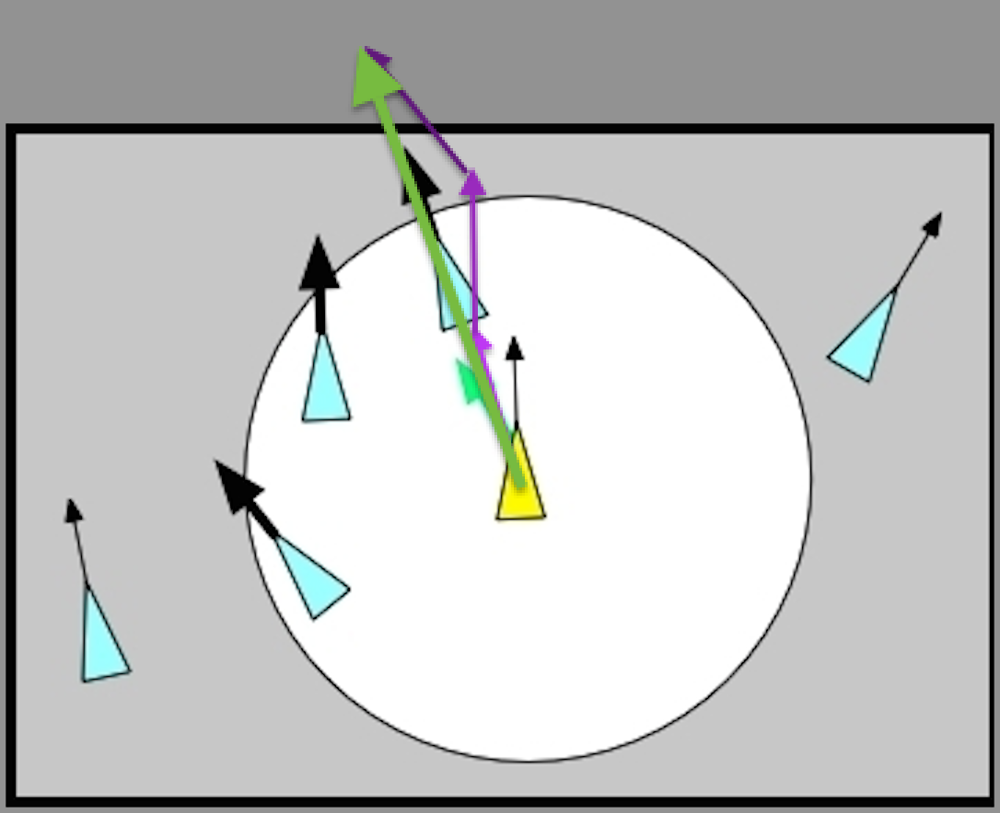
Normalize the result
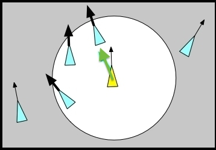
Alignment: Going Forward Together!

Optional Factors
Beyond simple interaction with swarm mates, the entities can be influenced by external factors and physical limitations.
Field of Vision

What does each entity see?
For simplicities sake, we're going to use a simple diameter test.
First, establish a range.

For a given entity, find the distance vector between it and this entity.

Test the length of the distance vector against our range

For the next entity, again find the distance vector between it and this entity.

Test the length again, this one is outside our field of view!

Eventually, we find all of the neighbors within our field of view!

Threats
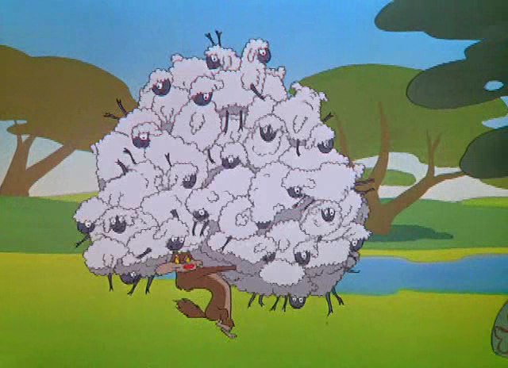
How does an entity respond to threats?
Assuming that the threat is deadly, the entity should steer away from it at all costs!
{kind=link}
Using the field of vision technique previously discussed, we first establish the entity's
field of vision (which typically doesn't change)

Find all potential threats within the entity's sight

Calculate a vector leading the entity away from each individual threat
(Think back to Separation!)

Add the escape vectors together...

...and we have our total escape vector!
(Don't forget to normalize the result!)

Goal Seeking

How does an entity react or search out goals?
Goal Seeking
Goal seeking can be done one of two ways:
The entities know where the goal is from the start
They wander around until they find it
First, detect any nearby goals (if the entity doesn't inherently know about them)

Then, head towards that goal!
(Think back to cohesion!)

Goal seeking can be reused for other things, such as following a trail of
bread crumbs or a scent left behind by peers!

Putting it All Together!
Normally all of the previously discussed factors would influence the entity equally.
While this will move the entity just fine, more interesting behavior comes from
changing the amount of influence a given factor has over the entity.

As we've already taken care to normalize the factors,
we simply multiply each factor by it's corresponding weight!
Once we're finished, we add the new, weighted factors together.

Predators
How might a predator act compared to a general swarm entity?
Alignment and separation work just as normal for a predator in this example.
However, for cohesion, a predator should seek out it's prey!
Find all nearby prey!

Just like cohesion for peers, calculate the center.

Normalize the result and use that as the cohesion force!

Demo!
Questions
Sources